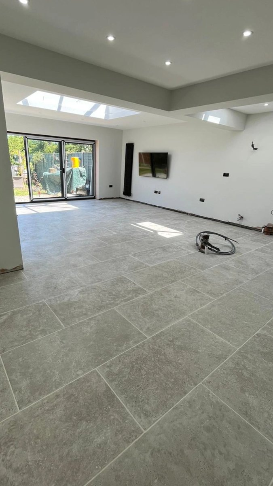

Trusted Local Tilers Covering Coventry & Warwickshire
My Tilers delivers high-quality wall and floor tiling for homes and businesses across Coventry and Warwickshire. Our team specialises in bathrooms, kitchens, and living spaces, using premium materials like marble, porcelain, and ceramic to create flawless finishes.
If you're searching for a reliable tiler in Coventry or surrounding CV postcodes, we're here to help. For more details, visit our main site or contact us today.
Bathroom Tiling
Transform your bathroom with stunning wall and floor tiles, expertly installed for a waterproof, elegant finish.
Kitchen & Floor Tiling
Professional installation of porcelain, ceramic, and natural stone tiles in kitchens, hallways, and living areas.
